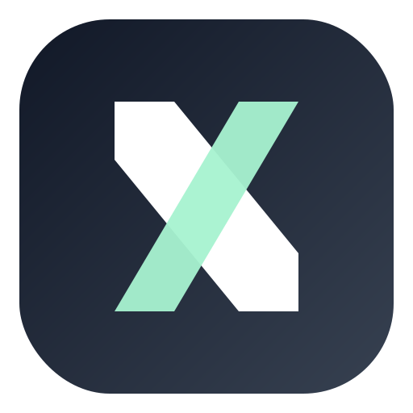

ONYX DATABASE
Players
Every player who has played on the ONYX server. Tier testing is stored separately.
⌕
#PLAYERREGIONOVERALLSTATUSDATABASE

ONYXTIER LIST ♜ ADMINEvery player who has played on the ONYX server. Tier testing is stored separately.